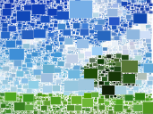
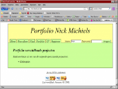

Researcher - Expertise Centre for Digital Media - Hasselt University
|
Businessplan – Youmotica
Nick Michiels, Jens Bruggemans, Jimmy Cleuren and Wim Leers Course: Entrepeneurship DescriptionBusinessplan created for a fictional company Youmotica. Youmotia is a company specialized in graphical user interfaces used for domotica installations. |
|
|
Internship at the Nuclear Research Centre SCK-CEN (Mol, Belgium) – MCNP/X Visualizer
Nick Michiels Course: Internship Language: Python, C++, POV-Ray
[manual]
DescriptionThe MCNPX Visualizer is a graphical user interface for rendering the geometry of a MCNPX file. It parses the geometry out of the file and renders it with the POV-Ray raytracer. |
|
|  |
ArtGenerator (AGe) on an Altera DE-270 FPGA
Nick Michiels, Jimmy Cleuren and Robin Marx Course: Design and Realization of High Performance Multimedia and HCI systems Language: Verilog on DE-270 FPGA and Quartus
[report (dutch)]
[mov]
DescriptionThree art generators designed as a particle system on a DE-270 FPGA. |
|
Jimmy The Viking
Nick Michiels, Jimmy Cleuren, Steven Reekmans, Jens Bruggemans and Wouter Nivelle Course: Multimedia Design Language: Unity 3D with C# scripting DescriptionA game concept, designed for the course Multimedia Design. It’s a viking game where Jimmy The Vikings needs to travel around the world to gain experience and skills to regain it’s rightful place on the throne of his tribe. His sidekick, Harhar The Viking is his father who helps Jimmy full-fulling his quests around the world. |
|
DescriptionAnimating a tennisgame. It uses Inverse Kinematics for the racket, Free Form Deformation for the ball, paramatric and physical trajectory of the ball and collision detection for the net/ground. It’s possible to play with one or two players. The players can play automatically or manually. |
|
SENSAR: Sensible Electronical Suited Awesome Realism
Nick Michiels and Wouter Nivelle Course: Mobile & Pervasive Computing Language: Processing, Unity3D, C and C++ DescriptionA fun sensor-based project for walking in a virtual world. Without the use of a mouse or keyboard you can do a couple of physical actions: walking, looking up/down, looking left/right, turning around, crouching and shooting/pointing. |
|
|
Spatialization and Speech synthesis in Pure Data
Nick Michiels and Robin Marx Course: Audio Processing Language: Pure Data Extended DescriptionA Pure data project wich can synthesize speech based on the phonemes. De sound is spatialized based on an opensource Java Jarky game. |
|
|
Networked Virtual Environment
Nick Michiels, Jimmy Cleuren and Robin Marx Course: Networked Virtual Environments Language: C++ and Irrlicht Engine
[pdf (dutch)]
[mov]
DescriptionThe core for a virtual environment. Designed with the following features:-CS or P2P approach -FPS for fast interactions and RTS for less fast interactions -Abstract layered design -Action based events for RTS -Dead Reckoning -Incremental position updates for FPS -Compression -Zoning baed on a coordinating peer in P2P -Zoning in CS -Variant of Area Of Interest |
|
|
Multi On A Row
Nick Michiels and Wouter Nivelle Course: Distributed Systems Language: C#/WPF DescriptionPlaying Multi On A Row over a network of distributed systems.Some problems we intended to solve:-scalability -timing problems -delays -consistent game board -client crashes |
|
|
Stochastische Raytracing and Image Warping
Nick Michiels and Robin Marx Course:Advanced Computer Graphics Language: C++ and OpenGL DescriptionStochastic raytracing with Monte Carlo integration and an image warper. |
|
|
Information Visualization
Nick Michiels, Robin Marx and Jens Bruggemans Course: Information Visualization Language: PHP/ActionScript/Flex/Elixir DescriptionIn this project we try to visualize a dataset as good as possible and solving some difficult problems. |
|
Visitor
Nick Michiels, Robin Marx, Jimmy Cleuren and Wouter Nivelle Course: Architecture and Algorithms of Computer Games Language: C++, scripting DescriptionOgre3D:-Graphics -Animaties -Particles -Caelum voor skybox NxOgre en NVidia PhysX: -Convex hulls -Ragdolls -Collision detection -Forces -Constructions met joints -Triggers Awesomium: -GUI and HUD -Layout editors Lua en Luabind: -Scripting of levels, levelblocks and objecten -Creating new objects in game -Content creation AmigoLib en TinyXML: -Gestures Fmod: -Sound RakNet: -Communication via network -Object Serialization |
|
|
Multi-party audio conferencing & instant messaging
Nick Michiels, Kevin Boutsen and Jan Oris Course: Interactive Multimedia and Communication Systems Language: C++/Qt
[binary]
DescriptionCreating a conferencing and instant messaging system. Used protocols: RTP/RTCP for audio transmission and SIP for session handling. |
|
|
Image and Video Compression
Nick Michiels and Kenneth Devloo Course: Technology of Multimedia Systems and Software Language: C++ DescriptionImage Compression: Compressing a raw 256 Kb input image to an own specific JPEG encoding.Video Compression: Compressing a raw YUV input video into an own specific video compression encoding. |
|
|
Two-scale Tone Management for Photographic Look
Nick Michiels and Jan Oris Course: Image Processing Language: Matlab DescriptionTwo-scale Tone Management for Photographic Look. |
|
|
Tungrorum
Nick Michiels, Jimmy Cleuren, Wouter Nivelle, Kenneth Devloo and Kevin Boutsen Course: Software Engineering Language: C# DescriptionTungrorum is a roll playing game, based on the game Carcasonne. |
|
|
FTP Client
Nick Michiels and Kenneth Devloo Course: Computer Networks Language: C++/Qt DescriptionFTP Client. |
|
Raycasting Engine
Nick Michiels and Kenneth Devloo Course: Computer Networks Language: C++/Qt DescriptionA raycasting engine and a powerful editor. Possibility to script the world.Features: -Basic Raycasting Engine -High Resolution Textures with scaling resolution -Alpha-value Sprites -Editor to fully customize the scene -Interactive scene with scripting: triggering, events -Compass Play Raycasting online (works only on Internet Explorer!) You can download full maps here: maps (i.e. voorbeeldje.txt) It can take a couple of minutes to load the app. -Key-Up: forward -Key-Down: backward -Key-Left: rotate left -Key-Right: rotate right -R: Look Up -F: Look Down -Space: Switch to mouse interaction |
|
|
Trekmania
Nick Michiels and Robin Marx Course: Computer Graphics Language: C++/OpenGL/3DS DescriptionMini Racing Game where you can step into a car and drive in a 3D world. |
|
|
Pathfinder
Nick Michiels, Jimmy Cleuren and Robin Marx Course: Advanced Web Technology Language: HTML/CSS/Javascript/Ajax/Java DescriptionWebsite for traveling.HTML Templating System CSS Style Java Servlets Ajax Javascript |
|
|
Backgammon
Nick Michiels and Kenneth Devloo Course: Object Oriented Programming Language: C++/Qt DescriptionBackgammon |
|
UI used by children
Nick Michiels, Kenneth Devloo, Tom Knapen and Sören Kuypers Course: Human Informatics Language: C and GTK for UI DescriptionUI for a program used by children. The purpose is to learn the children recognizing and writing words. For each age you can choose a difficulty. The words are categorized (i.e. nature, traffic, …). |
|
|
Vacation Database without UI
Nick Michiels, Kenneth Devloo and Sören Kuypers Course: C Imperative Programming Language: C DescriptionVacation Database with a console interface. |
|
|  |
Portfolio Website
Nick Michiels Course: Introduction to Web Technology Language: HTML/Javascript/PHP/SQL DescriptionInteractive portfolio website written in PHP |
|
Basic Website
Nick Michiels Course: Basic tools in computer science Language: HTML DescriptionBasic website written in HTML. |